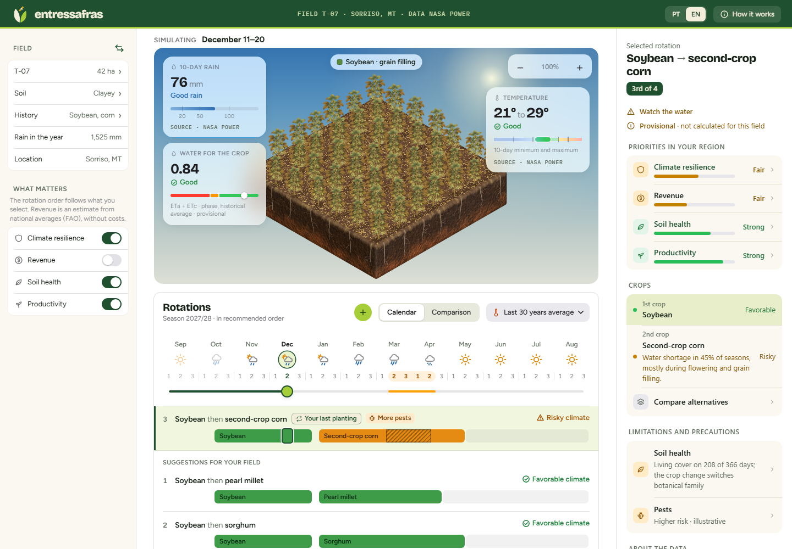
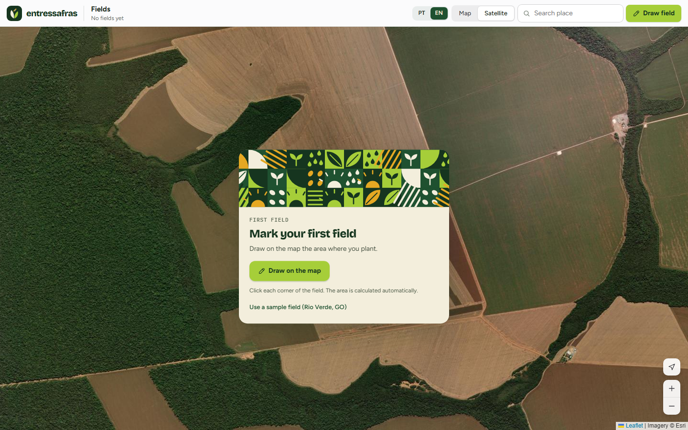
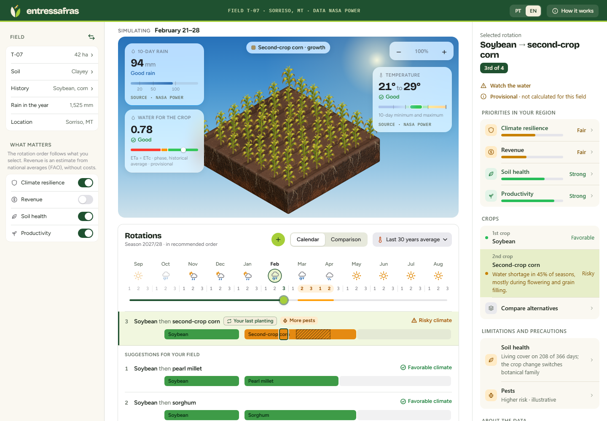
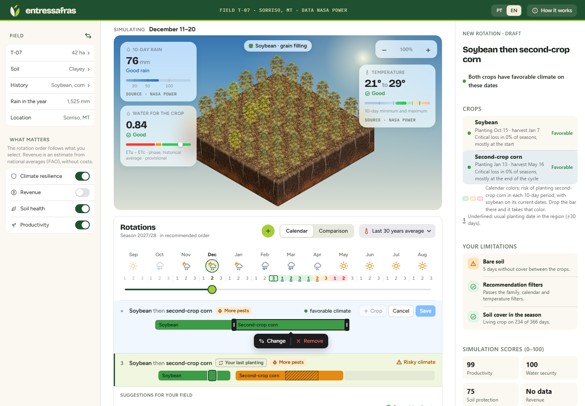
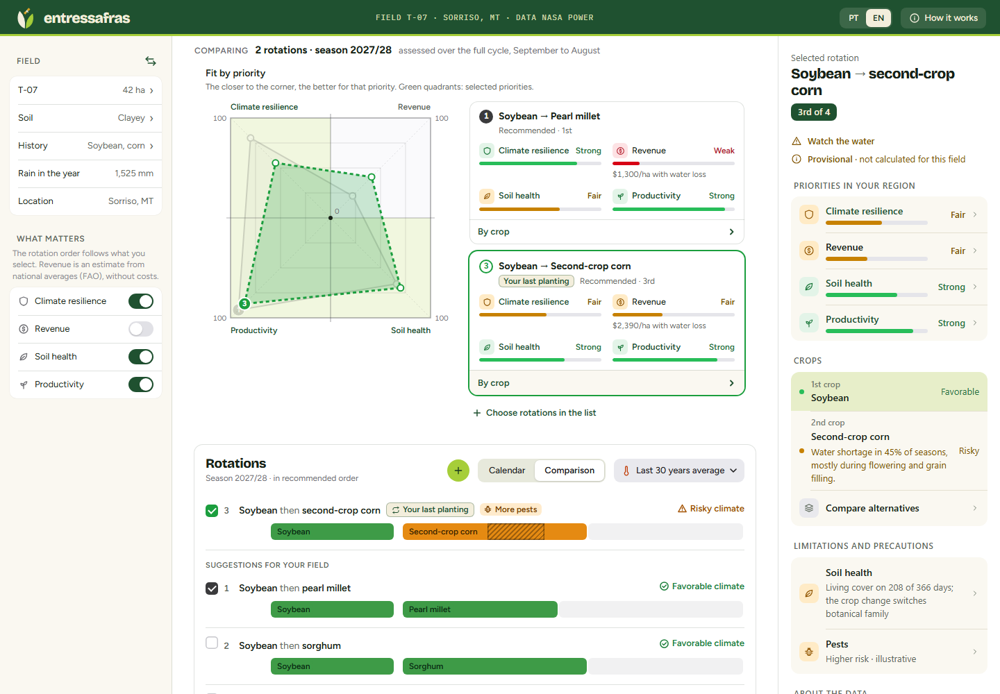
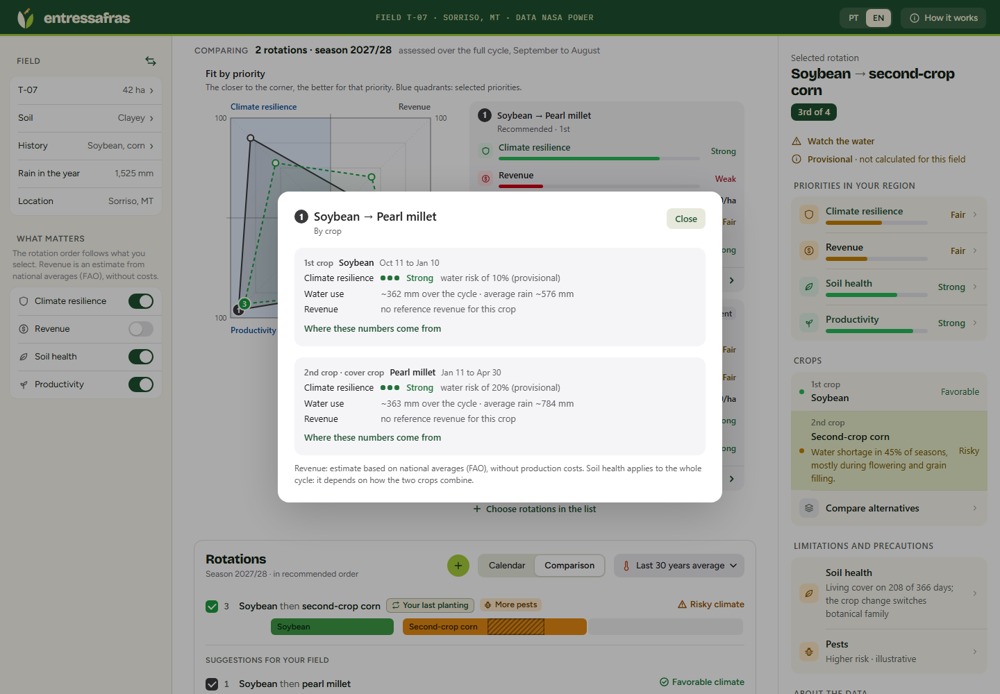

ENTRESSAFRAS
Project Details

What if farmers could test their next harvest before planting it?
Every planting season begins with a decision that can shape a farmer's entire year: what to grow, and when to plant it. Rainfall is becoming less predictable, dry spells can strike during critical growth stages, and leaving fields unprotected between harvests accelerates soil degradation. Farmers understand these risks. What they often lack is an accessible way to test their decisions against historical evidence before committing their land.
Named after the Portuguese word for "between harvests," Entressafras lets them do exactly that.
How Entressafras works
Entressafras helps farmers answer three questions: What should I plant next? When should I plant it? And what could go wrong?

The decision workflow:
- The farmer draws the field on the map, sets the soil texture and records what was planted last season. That rotation becomes the reference every suggestion is compared with.
- The farmer chooses what matters most: water security, productivity, soil protection or revenue. The ranking of rotations follows those priorities.
- Moving through the agricultural calendar, the farmer watches each crop grow on an isometric field, with 10-day rainfall, temperature and crop water supply from NASA data beside it.
- Critical periods are marked on each rotation: the growth stage that suffered the largest water deficit across past seasons. One click takes the simulation there.
- Farmers can build their own rotation, choosing crops and planting dates, and evaluate it with the same simulation.

For each rotation, farmers can explore:
- Historical performance: in how many of the last 30 seasons each crop would have faced a serious water-related yield loss.
- Planting windows: which dates expose crops to greater water-deficit risk during sensitive growth stages.
- Soil protection: how long the soil stays covered and whether the rotation changes plant family.
- Trade-offs: scores from 0 to 100 for productivity, water security, soil protection and optional revenue, side by side.
- Climate scenarios: how each rotation would behave in an illustrative warmer, or warmer and drier, climate.
Test any rotation you want, before planting it
Entressafras does not limit farmers to our suggestions. Any crop rotation a farmer has in mind can be built and tested, on their own field, against 30 seasons of NASA data, before a single seed goes into the ground.

- Any crops, in any order: the farmer picks the first and second crop from the catalog and can swap or remove either one.
- Any dates: dragging the edges of each bar sets planting and harvest. The calendar is colored by the historical risk of planting in each 10-day period, and the region's usual planting date is marked.
- The same science as our suggestions: the rotation runs through the same 30-season FAO-56 water balance, with the same 0–100 scores for productivity, water security and soil protection.
- Honest feedback: it shows how many days the soil stays bare between crops and whether the rotation would pass the same family, calendar and temperature filters our recommendations use.
- Side by side with everything else: once saved, the rotation joins the ranking and can be compared with the farmer's last planting and with our suggestions.
The farmer's own idea gets the same evidence as ours. That is what turns a recommendation tool into a decision rehearsal.

Benefits
The primary benefit of Entressafras is that farmers don't have to choose between trusting their experience and trusting the data: it helps them use both.
- Better-informed decisions: compare the current rotation with alternatives supported by 30 years of historical climate data, without expertise in climate science or GIS.
- Reduced exposure to climate risk: identify planting dates associated with greater historical water deficit and test rotations under warmer and drier scenarios before committing to a crop.
- Improved soil stewardship: weigh soil-cover duration and crop diversity alongside productivity.
- Accessible science: Earth observation data becomes an interactive experience built around agricultural decisions.
Our Creative Approach
Entressafras's creativity lies in five ideas:
- A living field instead of a scientific dashboard: environmental data becomes an animated agricultural landscape, connecting weather, crop stages and stress in one view.
- A decision rehearsal instead of a static recommendation: farmers test rotations and planting dates against 30 historical seasons and compare them with their current practice.
- Risk explained through real-world context: "water shortage in 45% of seasons, mostly during flowering and grain filling," instead of an abstract index.
- Recommendations controlled by the farmer: there is no universally best rotation. Farmers choose which trade-offs matter, and the system explains how those priorities change the ranking.
- Many Earth data sources, one experience: NASA POWER drives the crop-water simulation, SMAP adds satellite-informed soil-moisture context, and global soil and crop datasets tie it all to field operations.

How the simulation works
- Historical climate — NASA POWER: daily rainfall, temperature, humidity, wind and solar radiation. Reference evapotranspiration by FAO-56 Penman–Monteith (Hargreaves when data are missing). The calendar groups the last ten seasons into ten-day planning periods.
- Soil — ISRIC SoilGrids and NASA SMAP: sand, clay and organic carbon for the top 100 cm, turned into available water with Saxton & Rawls (2006) pedotransfer equations. SMAP Level-4 soil moisture (about 9 km) is shown in the climate calendar for context.
- Crop requirements — FAO and GGCMI: FAO-56 crop coefficients, stages, root depth and depletion tolerance; FAO-33 yield response to water; FAO EcoCrop temperature limits; GGCMI regional planting calendars. Candidate rotations pair crops from different botanical families.
- Historical water balance: a daily FAO-56 soil-water balance over 30 seasons, with fallow and crops in sequence and soil water carried from one crop to the next.
ETr = Ks × Kc × ET0andDr(t) = Dr(t−1) − P + ET, bounded between 0 and the available water.ISNA = ΣETr / ΣETc;yield loss = Ky × (1 − ISNA). Water risk is the share of seasons in which loss exceeds 20%.- Soil protection:
70 × share of the season with a living crop + 30 × share of transitions that change plant family, following USDA NRCS practice standards 340 and 328.
- Climate scenarios: the historical series is adjusted with the delta method (+1.0 °C, or +1.5 °C with 10% less rain and a rainy season starting 10 days later) and evapotranspiration is recomputed. These are illustrative, not projections.
Technical details and considerations
- Tools & Technologies: React 19, TypeScript, Vite, Leaflet, HTML Canvas 2D and Web Workers (frontend); Python 3.13, FastAPI, Uvicorn, Pydantic, pandas and httpx, with Google Earth Engine for SMAP and deployment on Railway (backend); Vitest, Testing Library, Playwright, pytest, Ruff and Oxlint (testing).
- Scientific validity: historical simulations are not forecasts. The method relies on FAO-56, FAO-33 and Saxton & Rawls, and the interface tells farmers that NASA POWER (about 50 km) and SMAP (about 9 km) are coarser than a single field.
- Uncertainty and missing data: crop risk is reported as unknown with fewer than five valid seasons, and SMAP fields are omitted when unavailable, so incomplete results never look like reliable recommendations.
- Agronomic feasibility: crop-family diversity, regional calendars, temperature suitability and stage sensitivity constrain the rotations considered.
- Farmer-centered design: familiar agricultural concepts, plain-language explanations and accessible visual signals, in English and Portuguese.
- Known limitations: single soil layer, no runoff or irrigation, FAO reference parameters not yet calibrated for Brazilian cultivars, illustrative climate scenarios, and soil-health indicators that are proxies. Recommendations still require local agronomic judgment.
Intended impact
We demonstrate Entressafras on a field in Sorriso, Mato Grosso, Brazil, a key soybean and second-crop corn region where planting windows and water availability shape every season. Because it relies on globally available Earth observation data combined with regional crop parameters and calendars, the approach can be adapted to other regions facing uncertain rainfall and soil degradation.
Next, we want to evaluate the recommendations with farmers and agronomists, compare results with Brazil's official agricultural climate-risk zoning (ZARC), calibrate crop parameters for local cultivars and use SMAP to initialize and check the simulated soil water.
Our measure of success is not how much data the platform processes, but whether farmers can turn that data into decisions they understand and trust.
Use of Artificial Intelligence (AI)
The team used Artificial Intelligence as a tool to accelerate development:
- Claude Code for code assistance: it helped write, test and debug parts of the frontend, all of which were reviewed and adapted by the developers. [confirmar e completar com as ferramentas usadas no backend]
- [se houver: ferramenta usada para os sprites/ilustrações e o que foi editado à mão]
In short, AI was used as a support tool to increase productivity, but the project's concept, scientific method, design and final execution are the team's original work.